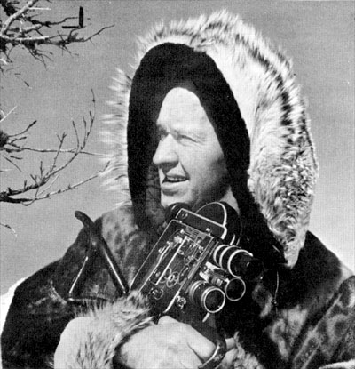
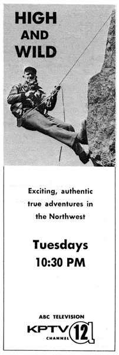

High
and Wild
?- August 17,
1962 - February 1971 - ?
A travel show,
focusing on the Northwest, narrated by Don Hobart.

|
 |
|
High and Wild cameraman
and narrator, Don Hobart. |
An exciting, fast-moving, true outdoor adventure
series. Don Hobart captures the majestic beauty of the great
Northwest in magnificent color as he takes viewers from the cruel struggle
of daily life in the Arctic to a rattlesnake hunt in the desert; from the
lonely flight of an Alaskan bush pilot to the topsy-turvy slapstick of a
white water race on the MacKenzie River.
Want to go skin diving for gold? See High
and WIld. Want to hunt big game with bow and arrow? See High
and Wild. Want to visit a thousand-year-old village of 350
Eskimos and 600 dogs? By all means, see High and Wild, the
show Oregonian columnist Francis Murphy described as "far
above average travel pictures."
Don Hobart, producer of High and Wild, is an
experienced sportsman and master photographer. Born in the rugged
Hell's Canyon country of Washington, he has spent years hunting, camping
and exploring the wild country he now films so successfully.
The colorful beauty of the Northwest, with a
skillful blend of danger, suspense, wildlife and human interest makes High
and Wild an outdoor show with wide appeal to outdoor and indoor
viewers!
KPTV Sales sheet, mid-1960s
|
|
 |
|
TV
Guide
ad
from
July
2, 1963. |
HIGH AND WILD - SELECTED PROGRAM LISTINGS
April 20, 1963
Films of the 25th annual White Water Parade. Object of the
parade: successful journey down the MacKenzie River rapids from Blue River
to Leaburg Dam, in anything floatable. Don Hobart moderates.
June 1, 1963
Films of the all Indian Tygh Valley rodeo in Central Oregon.
Photographed and narrated by Don Hobart.
December 15, 1964
"Timberline Ski Story." The Snow Cat takes Don Hobart
to the 10,000 foot level to photograph slow motion action of skiers.
Filmed in August at Mt. Hood.
May 04, 1965
Don Hobart's camera records the annual MacKenzie White River parade.
July 6, 1965
The Hobart crew goes to Vale, Oregon for pheasant shooting.
November 23, 1965
Yukon Territory is the scene of the "sour-dough" rendezvous.
January 10, 1971
"Alaska Mishaps." Don Hobart narrates this behind-the-scenes
account of a camera crew's trip to Alaska.
|
| High
and Wild BROADCAST
HISTORY |
AUG
1962
-
OCT
1962: FRI 7:00PM-7:30PM
FEB 1963 - MAY 1963: SAT 5:00PM-5:30PM
MAY 1963 - JUN 1963: SAT 6:30PM-7:00PM
JUL 1963 - : TUE 10:30PM-11:00PM
OCT 1964 - : TUE 8:00PM-8:30PM
MAY 1965 - : TUE 8:00PM-8:30PM
NOV 1965 - DEC 1965: TUE 8:00PM-8:30PM
DEC 1968 - : SAT 9:00PM-9:30PM
JUN 1969 - : SUN 4:30PM-5:00PM
JUN 1970 - : SUN 11:30AM-12:00PM
JAN 1971 - : SUN 10:30PM-11:00PM
FEB 1971 - : SAT 4:00PM-4:30PM |

  
This
page
last
updated
on
August 25, 2025 |